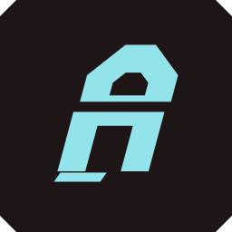

CYBERAUDIO
ICON SYSTEM / 2026.11
Neon Signal
.
切角 C × 音频脉冲 · 霓虹声脉
CYBERPUNK / macOS
01 / APP ICON

02
菜单栏图标
周五 11月6日 09:41
明亮外观 · 黑色模板图标
18 × 18 pt
周五 11月6日 09:41
深色外观 · 白色模板图标
18 × 18 pt
待机
工作中
同一轮廓，不同振幅
小尺寸保留品牌识别
03
应用图标尺寸
128
64
32
16
04
视觉语言
OBSIDIAN
NEON CYAN
SIGNAL PINK
黑曜石底色、切角几何、克制的辉光。
应用图标突出质感，菜单栏优先保持清晰。